Anchor Field
Drift Field
Location Framework
Coordinate Mapping
Terrain data is interpreted through directional vectors. Movement responds to relative position rather than absolute distance.
Active Locations
Key points are indexed within the field. Each location functions as a reference for spatial alignment and transition logic.
Spatial Center
The system converges toward a balanced focal region. Motion decelerates as positional variance reaches equilibrium.
The system has reached its final spatial state.